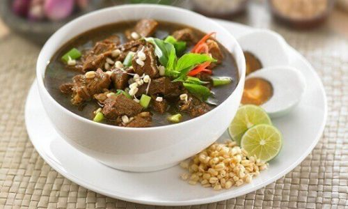

Rawon merupakan salah satu hindangan Indonesia yang berasal dari Jawa Timur. Meskipun begitu, rasa rawon sudah melekat di banyak lidah orang Indonesia, bahkan tak hanya di Jawa Timur. Meskipun, di beberapa daerah saat rawon disajikan biasanya disesuaikan dengan selera masyarakatnya.
Contohnya, rawon di Jawa Barat seperti di Bandung, saat kamu pergi ke rumah makan, akan lebih sering menemukan yang kuahnya tidak sekental rawon Jawa Timur. Karena lidah orang sunda yang lebih suka makanan gurih daripada terlalu manis, rasa rawon di sini uga cenderung lebih asin gurih.
Sejarah rawon yang menurut catatan sudah ada sejak 1.000 tahun lalu ini karena penemuan sebuah prasasti bernama prasasti Taji. Dalam prasasti tersebut rawon disebut sebagai hidangan dengan nama rarawwan.Nah, rarawwan ini adalah rawon yang saat ini kita kenal. Ternyata, hidangan rawon ini juga memiliki banyak jenisnya, dengan sentuhan khas berbeda di masing-masing wilayahnya.
Rawon Setan tidak asing di telinga para penikmat kuliner di Kota Surabaya. Bahkan, tak jarang banyak menyebut menjadi jenis rawon yang banyak difavoritkan. Dengan catatan, untuk mereka yang memang suka pedas. Rawon setan ciri khasnya dipadukan dengan sambal begitu pedas dengan daging yang besar dan empuk. Sejarah rawon setan ternyata cukuo panjang. Pertama kali dirintis pada tahun 1953 oleh Musiati. Uniknya kala itu Rawon Setan di warung Ibu Musiati ini buka pada pukul 02.00 -- pagi hari. Ternyata, warung ini dahulunya memang ada untuk para pekerja malam, maka dari itu nama lainnya Rawon Hostes.
Tak hanya di Surabaya saja, Rawon juga banyak terdapat di Malang. Salah satu yang paling terkenal adalah Rawon Tessy. Perbedaanya dengan rawon lainnya ada pada segi warna kuahnya. Rawon Tessy warnanya lebih kecoklat-coklatan, sementara rawon lainnya lebih ke hitam. Namun, cita rasanya juga tak kalah menggugah selera.